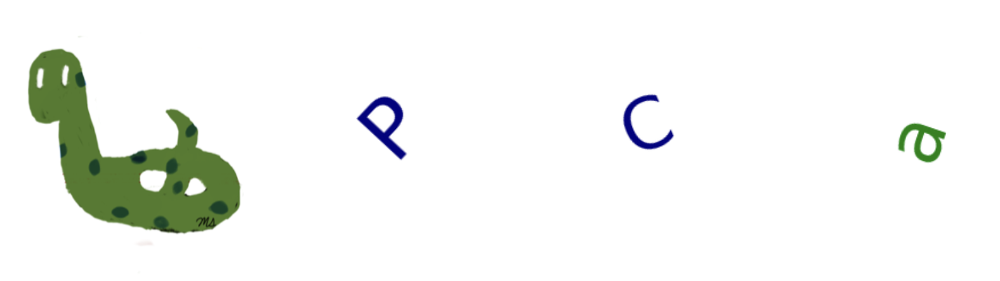
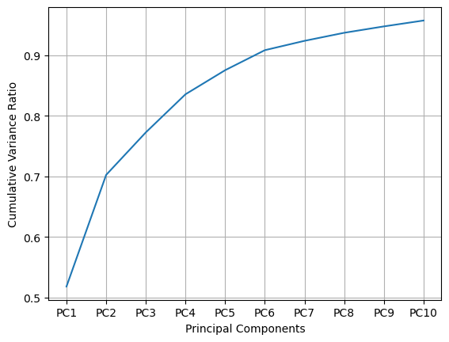
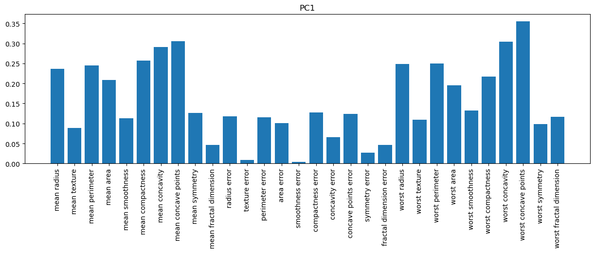
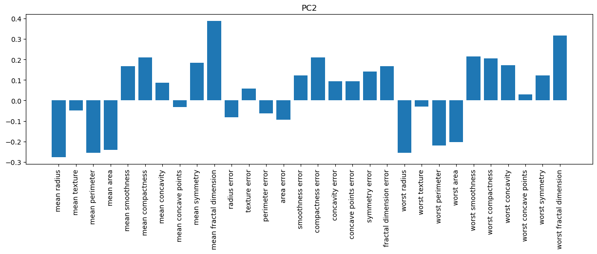
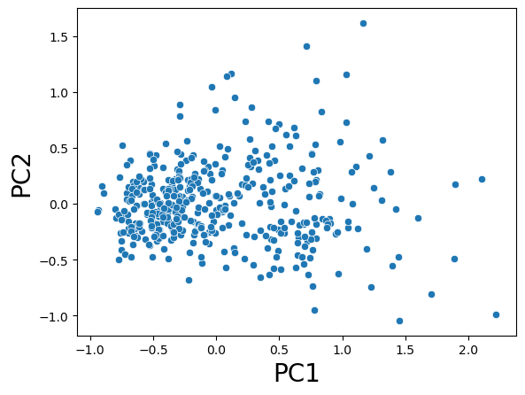
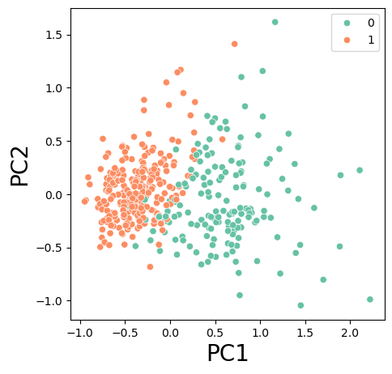

PCA#

Principal Component Analysis (PCA) is commonly used for dimensionality reduction and visualization.
Change of Base:
Transforms the data by changing its basis to highlight key patterns or components.
import matplotlib.pyplot as plt
import numpy as np
np.random.seed(42)
plt.figure(figsize=(5,5))
x = np.linspace(-1,1,20)
noise = np.random.randn(20)/3
y = 2*x+noise
y = y-np.mean(y)
from sklearn.decomposition import PCA
pca = PCA(n_components=2)
pca.fit(np.stack([x,y]).T)
m1 = pca.components_[0,1]/pca.components_[0,0]
m2 = pca.components_[1,1]/pca.components_[1,0]
y1,y2 = m1*x, m2*x
plt.scatter(x,y,c='g');
plt.plot(x,y1, 'r--', label='PC1')
plt.plot(x,y2, 'b--', label='PC2')
plt.xlim(-2,2)
plt.ylim(-2,2)
plt.grid()
plt.legend();

Cancer Dataset#
from sklearn.datasets import load_breast_cancer
X, y = load_breast_cancer(return_X_y=True)
f_names = load_breast_cancer().feature_names
from sklearn.model_selection import train_test_split
X_train, X_test, y_train, y_test = train_test_split(X, y, random_state=42)
from sklearn.preprocessing import MinMaxScaler
scaler = MinMaxScaler()
# apply min_max_scaler to training and test set
X_train_scaled = scaler.fit_transform(X_train)
X_test_scaled = scaler.transform(X_test)
PCA and dim=10#
# 10 pc
from sklearn.decomposition import PCA
pca_10 = PCA(n_components=10)
pca_10.fit(X_train_scaled)
PCA(n_components=10)In a Jupyter environment, please rerun this cell to show the HTML representation or trust the notebook.
On GitHub, the HTML representation is unable to render, please try loading this page with nbviewer.org.
PCA(n_components=10)
# explained_variance_ratio_
pca_10.explained_variance_ratio_
array([0.51834856, 0.18411207, 0.07009027, 0.0628725 , 0.03973014,
0.03298706, 0.01540735, 0.01327304, 0.0105223 , 0.00970247])
# cumsum
pca_10.explained_variance_ratio_.cumsum()
array([0.51834856, 0.70246063, 0.7725509 , 0.8354234 , 0.87515355,
0.90814061, 0.92354796, 0.936821 , 0.9473433 , 0.95704577])
# plot cumsum
import matplotlib.pyplot as plt
x_l = ['PC'+str(i) for i in range(1,11) ]
plt.plot(x_l, pca_10.explained_variance_ratio_.cumsum())
plt.xlabel('Principal Components')
plt.ylabel('Cumulative Variance Ratio')
plt.grid()

# PC1
plt.figure(figsize=(15,4))
plt.bar(f_names, pca_10.components_[0,:])
plt.title('PC1')
plt.xticks(rotation=90);

# PC2
plt.figure(figsize=(15,4))
plt.bar(f_names, pca_10.components_[1,:])
plt.title('PC2')
plt.xticks(rotation=90);

PCA and dim=2#
# 2 pc
pca_2 = PCA(n_components=2)
pca_2.fit(X_train_scaled)
PCA(n_components=2)In a Jupyter environment, please rerun this cell to show the HTML representation or trust the notebook.
On GitHub, the HTML representation is unable to render, please try loading this page with nbviewer.org.
PCA(n_components=2)
# transform
X_pca_2 = pca_2.transform(X_train_scaled)
X_pca_2.shape
(426, 2)
# plot transformed data
import seaborn as sns
sns.scatterplot( x = X_pca_2[:,0], y = X_pca_2[:,1] )
plt.xlabel('PC1', fontsize=20)
plt.ylabel('PC2', fontsize=20);

# plot transformed data with hue
plt.figure(figsize=(5,5))
sns.scatterplot( x = X_pca_2[:,0], y = X_pca_2[:,1], hue = y_train, palette ='Set2' )
plt.xlabel('PC1', fontsize=20)
plt.ylabel('PC2', fontsize=20);

Hybrid Model kNN and PCA#
# knn with 3 neighbors applied to the original data
from sklearn.neighbors import KNeighborsClassifier
knn = KNeighborsClassifier(n_neighbors = 3)
knn.fit(X_train_scaled, y_train)
knn.score(X_train_scaled, y_train), knn.score(X_test_scaled, y_test)
(0.9906103286384976, 0.972027972027972)
# PCA with dim=2
knn.fit(X_pca_2, y_train)
knn.score(X_pca_2, y_train), knn.score(pca_2.transform(X_test_scaled), y_test)
(0.9624413145539906, 0.958041958041958)